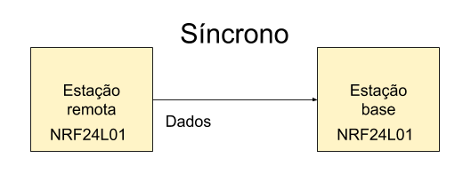

Teste e desenvolvimento dos algoritmos de comunicação entre os módulos NRF24L01
Neste documento será relatado como ocorrerá a comunicação entre os módulos NRF24L01 das diferentes estações (remota/base), ou seja, será demonstrado a direção da comunica, o modo de comunicação e a formatação dos dados enviados. Ao final do relato será disponibilizado código para Arduino implementado tanto no módulo de transmissão quanto no de recepção. O diagrama de blocos abaixo representa a comunicação estudada.
A comunicação nesta parte do projeto será do tipo síncrona e ocorrerá transmissão de dados somente por parte da estação remota. Os dados serão transmitidos no formato JSON como já discutido na seguinte documentação localizada na seguinte página: Estudo sobre foratação JSON
Os códigos referentes a essa etapa foram publicados no seguinte endereço:
bOs referentes documentos a respeito da codificação desta parte do projeto têm o objetivo de realizar uma simples comunicação entre os módulos de rádio enviando pequenos dados de testes (inteiros) a fim de garantir a transmissão está ocorrendo conforme o esperado.